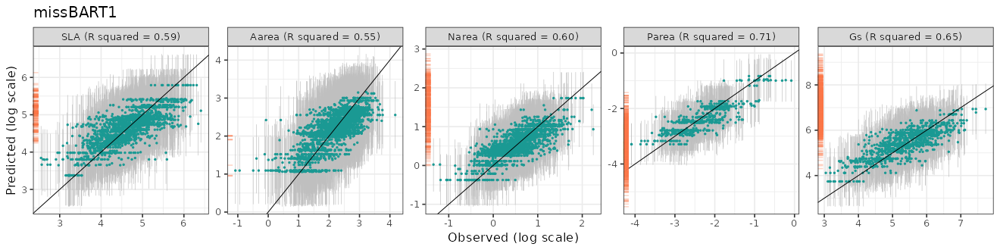
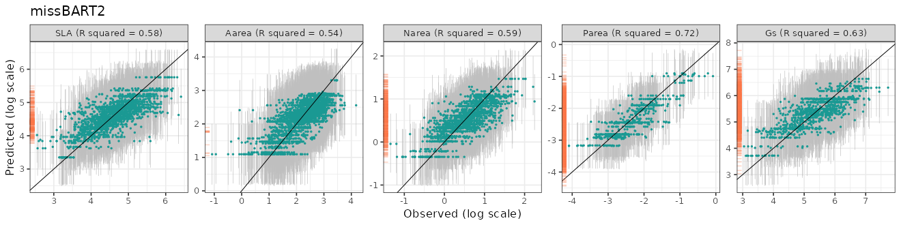
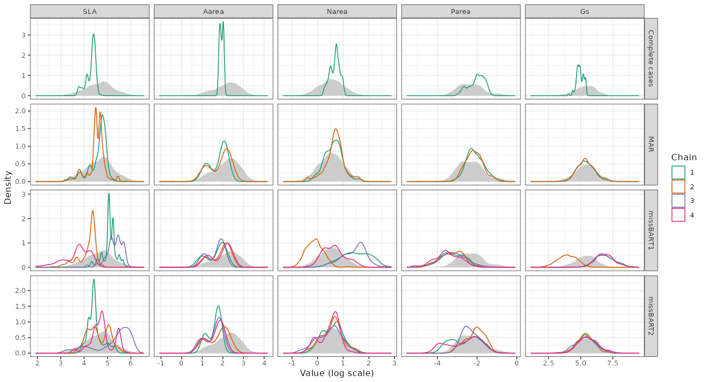
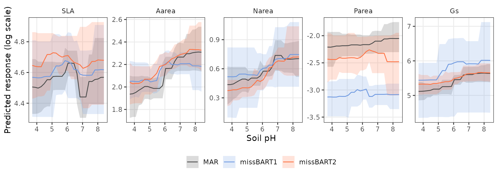
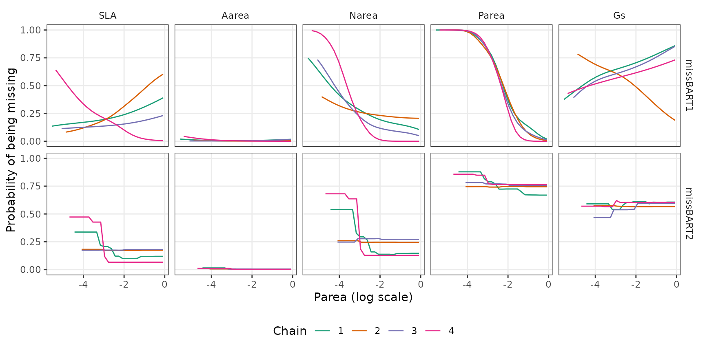
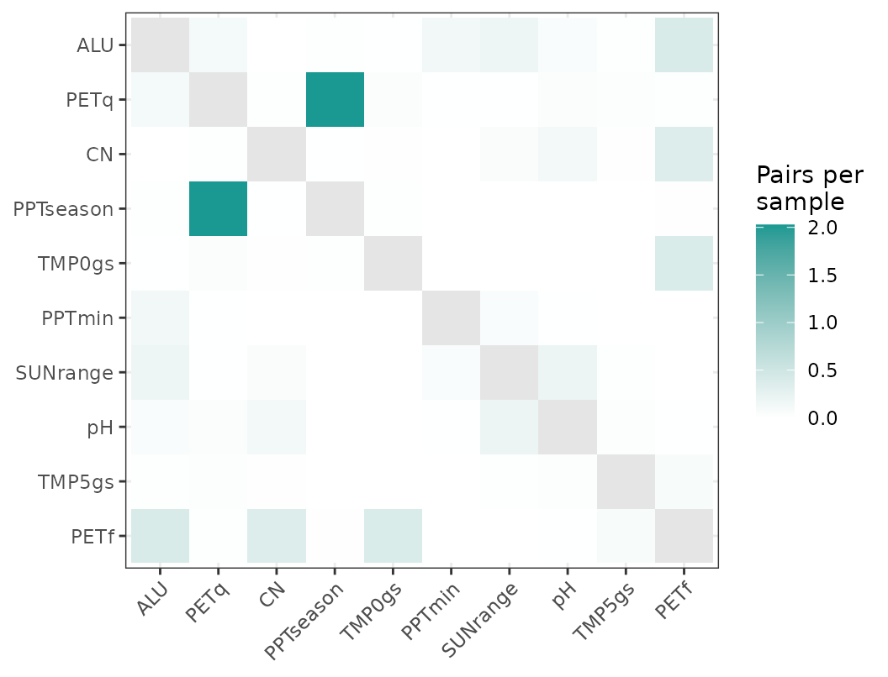

This article fits missBART1() and
missBART2() to the global Amax data of Maire et
al. (2015), the application in Section 7 of Goh, Soh, Parnell and Murphy
(2024, arXiv:2412.14946),
using version 0.2.0 of the package. It also compares them with the same
response model fitted under the assumption that the missingness can be
ignored.
The data
The data hold five leaf photosynthetic traits for 2368 plants, together with 46 soil and climate covariates. The traits are specific leaf area (SLA), light-saturated photosynthetic rate (Aarea), leaf nitrogen (Narea), leaf phosphorus (Parea) and stomatal conductance (Gs), all modelled on the log scale. The covariates are complete, but most of the responses are not, and only 217 plants have all five:
| Response | Missing | Per cent missing |
|---|---|---|
| SLA | 433 | 18.3 |
| Aarea | 12 | 0.5 |
| Narea | 652 | 27.5 |
| Parea | 1836 | 77.5 |
| Gs | 1353 | 57.1 |
The data are not distributed with the package, so this article shows
posterior summaries that were saved by Examples/rerun_global_amax.R.
Fitting the models
The settings are those of the paper: 5,000 burn-in and 5,000 kept iterations, 100 regression trees and 50 missingness trees. Each model is run as four chains from different starting values, and the trees are kept so that partial dependence curves can be computed afterwards.
library(missBART)
data <- as.data.frame(readxl::read_excel("Maire_dataset_for_Andrew.xlsx", sheet = "Data"))
y <- as.matrix(log(data[, c("SLA", "Aarea", "Narea", "Parea", "Gs")]))
x <- as.matrix(data[, which(names(data) == "PPTmean"):ncol(data)])
fit1 <- missBART1(x, y, n_trees = 100, burn = 5000, iters = 5000, thin = 1,
n_chains = 4, cores = 4, keep_trees = TRUE)
fit2 <- missBART2(x, y, n_reg_trees = 100, n_class_trees = 50, burn = 5000, iters = 5000, thin = 1,
n_chains = 4, cores = 4, keep_trees = TRUE)
# the same response model, with the missingness assumed ignorable (MAR)
fit_mar <- missBART1(x, y, n_trees = 100, burn = 5000, iters = 5000, thin = 1,
include_y = FALSE, n_chains = 2, cores = 2, keep_trees = TRUE)Four chains of missBART1 took 1.7 minutes and four
chains of missBART2 1.5 minutes, with the chains of each
model run in parallel.
Fit to the observed responses
Each point is one observed response: its observed value is on the horizontal axis and the posterior mean prediction of the model is on the vertical axis. The grey vertical bars are the 95% prediction intervals, so a point is covered when its bar crosses the diagonal line. The orange rug on the vertical axis shows the posterior means of the imputed values for the missing responses, which have no observed value to plot them against. The points fall in horizontal bands because plants measured at the same site share the same covariates, and so the same prediction. These plots correspond to Figure 5 of the paper, with the axes swapped (first chain of each model).


| Response | missBART1 | missBART2 | MAR | Complete cases | Coverage, missBART1 | Coverage, missBART2 | SD of observed |
|---|---|---|---|---|---|---|---|
| SLA | 0.39 | 0.39 | 0.39 | 0.68 | 0.95 | 0.95 | 0.62 |
| Aarea | 0.44 | 0.44 | 0.44 | 0.63 | 0.95 | 0.96 | 0.65 |
| Narea | 0.31 | 0.31 | 0.32 | 0.45 | 0.96 | 0.95 | 0.50 |
| Parea | 0.36 | 0.35 | 0.35 | 0.52 | 0.95 | 0.96 | 0.66 |
| Gs | 0.47 | 0.48 | 0.49 | 0.88 | 0.97 | 0.97 | 0.80 |
The three models that use every row fit the observed responses equally well, and the prediction intervals have close to their nominal coverage. The complete case model is fitted to 217 plants only, so most of its error is out of sample. The observed responses alone therefore cannot tell the three models apart; they differ in what they say about the missing responses.
What is imputed
The grey area in each panel is the distribution of the observed values of a response. The lines are the distributions of the imputed values (posterior means), one line per chain.

| Model | Chain | SLA | Aarea | Narea | Parea | Gs |
|---|---|---|---|---|---|---|
| Observed values | 4.64 | 2.17 | 0.53 | -2.31 | 5.38 | |
| Complete cases | 4.29 | 1.93 | 0.67 | -2.02 | 4.95 | |
| MAR | 1 | 4.59 | 1.78 | 0.63 | -2.10 | 5.43 |
| MAR | 2 | 4.51 | 1.86 | 0.68 | -2.14 | 5.40 |
| missBART2 | 1 | 4.47 | 1.58 | 0.58 | -2.61 | 5.47 |
| missBART2 | 2 | 4.61 | 1.75 | 0.57 | -2.10 | 5.40 |
| missBART2 | 3 | 5.23 | 1.55 | 0.46 | -2.30 | 5.38 |
| missBART2 | 4 | 4.76 | 1.62 | 0.47 | -2.65 | 5.61 |
| missBART1 | 1 | 5.09 | 1.65 | 1.48 | -3.29 | 6.92 |
| missBART1 | 2 | 4.15 | 1.87 | -0.11 | -3.24 | 3.94 |
| missBART1 | 3 | 5.31 | 1.64 | 1.42 | -3.18 | 6.85 |
| missBART1 | 4 | 3.70 | 1.91 | 0.64 | -3.50 | 6.88 |
- Under MAR the imputations are predictions from the covariates and the observed responses of the same plant, so they sit inside the observed distribution, and the two chains agree closely.
-
missBART2stays fairly close to MAR, but its chains differ from each other more than the MAR chains do. -
missBART1imputes values far from the observed ones, and its chains disagree about the direction: for most responses some chains impute values well above the observed ones and others well below.
How stable are the fits?
chain_diagnostics() compares the chains. The potential
scale reduction factor (R-hat) should be close to 1. The second table
gives the same information in more tangible units: the difference
between the largest and smallest chain mean, in standard deviations of
the observed response.
| Model | SLA | Aarea | Narea | Parea | Gs |
|---|---|---|---|---|---|
| MAR | 1.17 | 1.07 | 1.13 | 1.06 | 1.06 |
| missBART2 | 3.86 | 1.20 | 1.29 | 5.30 | 1.95 |
| missBART1 | 5.47 | 1.30 | 10.33 | 2.44 | 24.03 |
| Model | SLA | Aarea | Narea | Parea | Gs |
|---|---|---|---|---|---|
| MAR | 0.13 | 0.11 | 0.11 | 0.07 | 0.04 |
| missBART2 | 1.25 | 0.30 | 0.23 | 0.84 | 0.29 |
| missBART1 | 2.63 | 0.40 | 3.20 | 0.49 | 3.72 |
The chains of missBART1 differ by several standard
deviations for some responses. Within a chain the imputations are
stable, so each chain has settled in a different mode and does not move
between them in 10,000 iterations. The missBART2 chains are
much closer to each other, but they have not converged to a common
answer either (the R-hat of a mean over hundreds of imputed values is a
strict measure, because that mean varies very little within a
chain).
The same shows in the probit coefficients. The table gives the
posterior mean of the coefficient of each response in the model for its
own missingness. A positive value means that large values are more
likely to be missing. The paper used the opposite coding, so
the signs of its values are reversed here to match. The table includes
four chains with the update of the missing responses described in the
paper (ymis_update = "marginal"), and four shorter chains
with the original R code of version 0.1.0, which takes about 29 minutes
for 1,000 iterations on these data.
| Version | Iterations | Chain | SLA | Aarea | Narea | Parea | Gs |
|---|---|---|---|---|---|---|---|
| 0.2.0, conditional update | 10,000 | 1 | 24.7 | -6.1 | 26.8 | -19.5 | 24.2 |
| 0.2.0, conditional update | 10,000 | 2 | -12.4 | 7.2 | -20.8 | -14.8 | -24.7 |
| 0.2.0, conditional update | 10,000 | 3 | 26.1 | -7.5 | 29.4 | -18.3 | 24.0 |
| 0.2.0, conditional update | 10,000 | 4 | -26.8 | -1.3 | 4.8 | -21.7 | 22.8 |
| 0.2.0, marginal update | 10,000 | 1 | 14.7 | 2.5 | 1.3 | -18.0 | -12.9 |
| 0.2.0, marginal update | 10,000 | 2 | 17.6 | 3.1 | 3.6 | -17.3 | 17.1 |
| 0.2.0, marginal update | 10,000 | 3 | 15.2 | 0.9 | 8.1 | -17.4 | -13.5 |
| 0.2.0, marginal update | 10,000 | 4 | 17.2 | 0.1 | -0.1 | -17.4 | -13.0 |
| 0.1.0 (original R code) | 1,000 | 1 | 12.9 | 1.1 | 0.4 | -14.8 | -11.4 |
| 0.1.0 (original R code) | 1,000 | 2 | 10.9 | -3.1 | 8.3 | -10.2 | -10.9 |
| 0.1.0 (original R code) | 1,000 | 3 | 4.6 | 2.3 | -12.5 | -8.5 | -12.4 |
| 0.1.0 (original R code) | 1,000 | 4 | 10.0 | 0.0 | -10.5 | -13.8 | -11.9 |
| Paper (Figure 6, read by eye, sign reversed) | 10,000 | 15.0 | 3.0 | -5.0 | -18.0 | -13.0 |
The number of chains, out of four, whose coefficient has the same sign as in the paper:
| Version | SLA | Aarea | Narea | Parea | Gs |
|---|---|---|---|---|---|
| 0.2.0, conditional update | 2 | 1 | 1 | 4 | 1 |
| 0.2.0, marginal update | 4 | 4 | 1 | 4 | 3 |
| 0.1.0 (original R code) | 4 | 3 | 2 | 4 | 4 |
The chains of every version disagree with each other for at least one response. Where the original code and the marginal update agree with the paper more often than the conditional update does, that is not evidence for the direction reported in the paper, because the conditional update is the correct full conditional distribution.
So the multimodality is a property of the model on these data, and it is present in the original code too. Which mode a chain finds depends on its starting values, and how often each mode is found depends on how the missing responses are updated. Because the chains do not move between modes, their relative posterior weights cannot be judged from these runs.
This is the well-known weak identifiability of selection models. With a probit regression for the missingness, a response that is mostly missing can be explained almost equally well by missing values that are all large or all small, and the sampler cannot cross between the two explanations. The practical consequences are:
- Conclusions about the direction of the missingness
mechanism from
missBART1on these data (for example, Figure 6 of the paper) depend on the chain, and should not be drawn from a single run. - Several chains should be run and compared (
n_chains) before interpreting the coefficients or imputations of either model. -
missBART2is the safer choice here, because its chains differ far less, but its imputations should still be reported with their between-chain variation.
Does modelling the missingness change the conclusions?
The partial dependence of each response on soil pH, one of the covariates highlighted in the paper (its Figure 9), under MAR and under the two joint models. The lines are posterior means and the bands 95% intervals, pooled over chains.

The curves average over all plants, including those whose response is missing, and the models disagree about those. Measured in standard deviations of the observed response, the average shift of each curve relative to MAR is:
| Model | SLA | Aarea | Narea | Parea | Gs |
|---|---|---|---|---|---|
| missBART1 | 0.09 | 0.02 | 0.07 | -1.43 | 0.48 |
| missBART2 | 0.20 | 0.10 | -0.09 | -0.39 | 0.12 |
The covariates used by the regression trees are broadly similar
across the models. The rank correlation of the variable importances with
those under MAR is 0.34 for missBART1 and 0.58 for
missBART2, and 3 and 5 of the ten most important covariates
are shared.
Missingness probabilities
The partial dependence of the probability that each response is missing on the value of Parea, as in Figure 10 of the paper (which showed the probability of being observed). One line per chain.

For missBART1, the curve for the missingness of Parea
itself is steep and the same in every chain: plants with low Parea are
much more likely to have it missing. The curves for the other responses
differ between chains, in line with the coefficients above. The
missBART2 curves are flatter and show the same direction
for Parea in the chains where there is any effect.
Variable importance and interactions from missBART2
The ten predictors used most often in the missingness trees and in the regression trees (averaged over chains), as in Figure 7 of the paper.

The importance is the proportion of splitting rules that use a predictor, averaged over the posterior samples. It is spread thinly over many correlated covariates, so the ordering varies from chain to chain. Across the four chains, the three most used predictors in the missingness trees are: ALU, Parea, CLAY; ALU, TMPmean, SBA; ALU, SAND, BULK; ALU, PPTseason, Miq. Exchangeable aluminium (ALU), which the paper found to be the most important predictor of the missingness, ranks 1, 1, 1, 1 out of 51. Parea, the only response among the top ten in the paper, ranks 2, 42, 18, 9. A response can also be used in the missingness trees simply because it is correlated with the covariates, so its importance is not by itself evidence that the data are missing not at random.
interactions() counts how often two predictors are used
in consecutive splitting rules on the same branch, as in Figure 8 of the
paper. For the ten most important predictors of the regression trees
(first chain):
